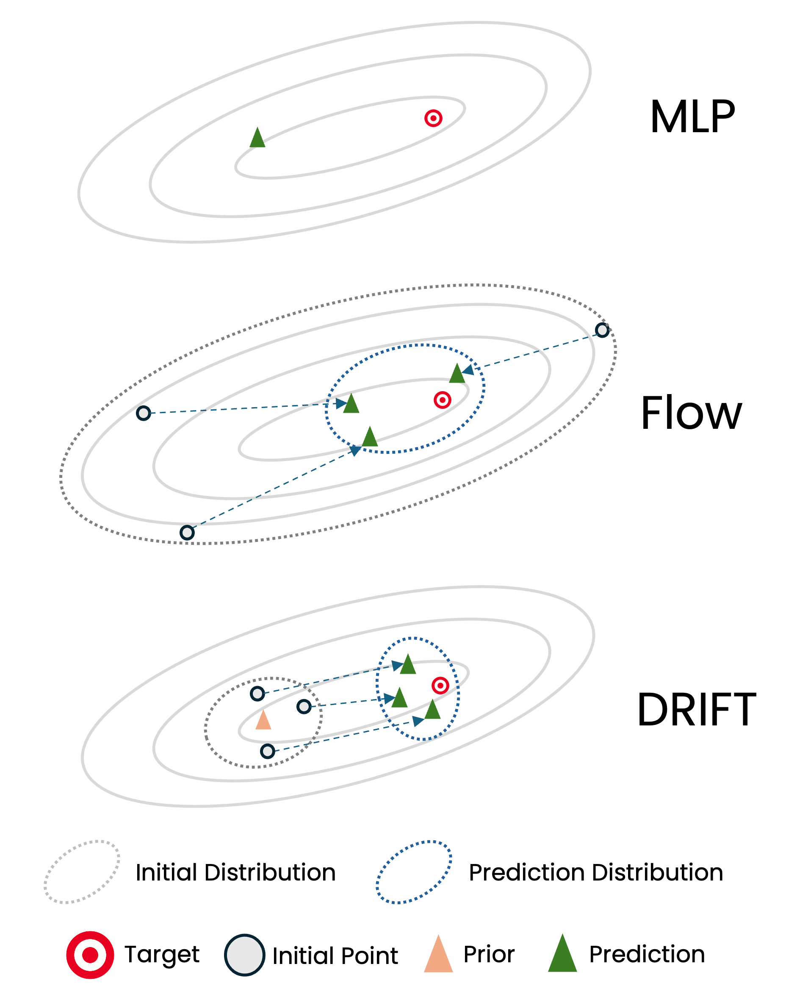
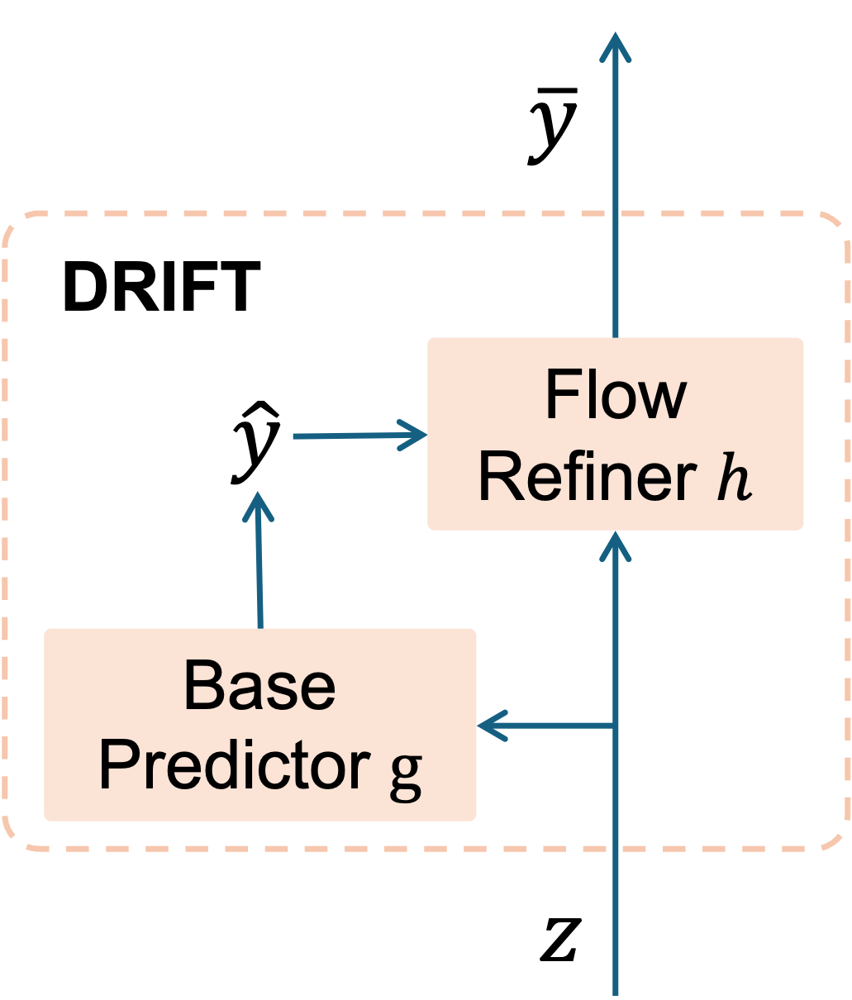
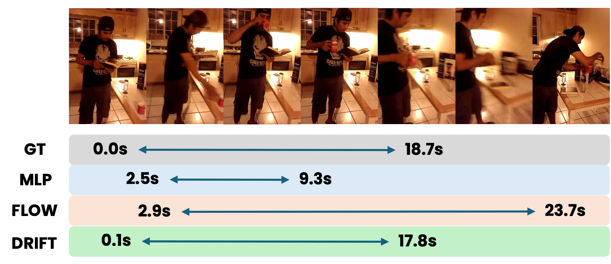
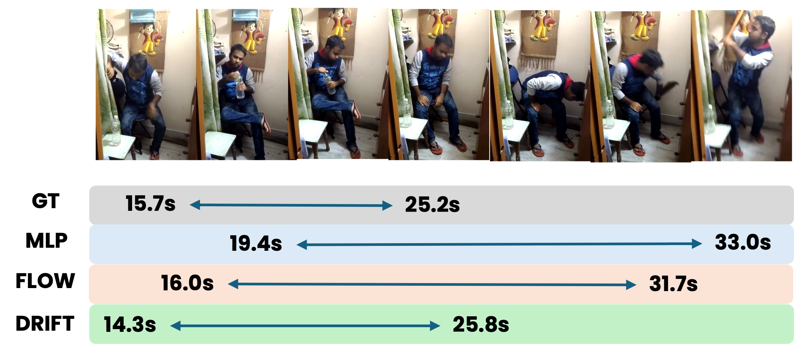
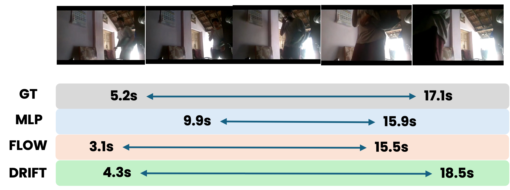
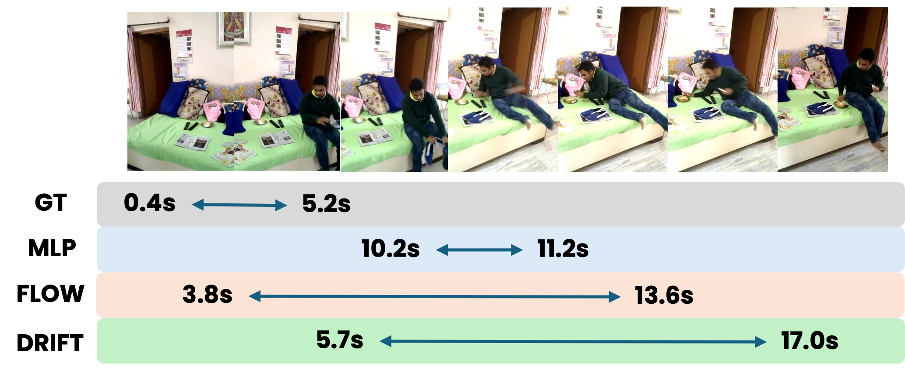

Vision-Language Models for Continuous Outputs
DRIFT adapts pretrained vision-language models to tasks that require precise continuous predictions. It couples a base predictor, which provides a coarse target estimate, with a flow-matching residual refinement module that iteratively improves the output around that prior.

Many modern vision-language models (VLMs) build on autoregressive decoding of discrete tokens. While text-based output interfaces enable scalable pretraining and strong zero-shot generalization across diverse tasks, they are poorly suited for problems that require precise continuous outputs, such as localizing temporal boundaries of events or generating robotic control actions.
To address this challenge, we propose DRIFT, a general framework for adapting pretrained VLMs to continuous decoding tasks. DRIFT combines a base predictor, which provides a coarse estimate of the target output, with a generative refinement module based on flow matching that iteratively improves the prediction.
This residual formulation transforms the generative modeling problem from learning a global output distribution to modeling a localized residual distribution around a strong prior, substantially simplifying optimization. We evaluate DRIFT on both perception and planning tasks, including visual grounding and robotic control. Across multiple tasks and architectures spanning Multi-modal Large Language Models (MLLMs), Vision-Language-Action Models (VLAs), and World Action Models (WAMs), DRIFT consistently outperforms a strong set of regression- and generative-based baselines.
Discrete token decoding is convenient for language, but can introduce quantization errors and discard ordinal structure in continuous prediction tasks.
Leverage the knowledge in the pretrained VLMs and use a light weight module to predict strong prior, then learn a residual flow that refines the coarse prediction into a precise continuous output.
The adapter is designed for MLLMs, VLAs, and world-action models in perception and planning settings.
DRIFT preserves the knowledge and transfer behavior of pretrained vision-language backbones while adding a compact continuous decoder. The base predictor gives the adapter a useful starting point; the residual flow focuses its capacity on the remaining correction.

Visual and language context are encoded by an existing model trained with a discrete autoregressive interface.
A base predictor estimates the continuous target base on the information in the special tokens, creating a strong prior close to the final answer.
A flow-matching refinement module models the residual from base predictor to the final answer and iteratively improves the prediction.
DRIFT consistently improves continuous decoding across action generation, temporal localization, spatial grounding, and world-action modeling. Tables report the headline numbers from the results figures.
Action success rates on Libero and Simpler. Higher is better.
| Method | Base Model | Action Decoder | Libero | Simpler | ||||
|---|---|---|---|---|---|---|---|---|
| Spatial | Object | Goal | Long | AVG | ||||
| OpenVLA* [20] | Prismatic-7B [17] | Tokenizer | 83.1 | 88.5 | 76.4 | 54.1 | 75.5 | 7.7 |
| VLM4VLA [69] | Qwen3-VL-2B [2] | MLP | N/A | N/A | N/A | 55.8 | N/A | 49.0 |
| InternVLA [7] | Qwen2.5-VL-3B [3] | Diffusion | 98.0 | 99.0 | 93.8 | 92.6 | 95.8 | 54.2 |
| DRIFT | OpenVLA-7B [20] | DRIFT-Tokenizer | 87.0 | 89.1 | 77.5 | 57.0 | 77.7 | 13.5 |
| DRIFT | Qwen3-VL-2B [2] | DRIFT-MLP | 98.8 | 99.2 | 97.0 | 96.4 | 97.9 | 61.5 |
Zero-shot generalization on Charades-STA and ActivityNet-Captions. Higher is better.
| Method | # Train | Charades-STA | ActivityNet-Captions | ||||||
|---|---|---|---|---|---|---|---|---|---|
| R@0.3 | R@0.5 | R@0.7 | mIoU | R@0.3 | R@0.5 | R@0.7 | mIoU | ||
| LT-ZVG [19] | - | 52.9 | 37.2 | 19.3 | 36.0 | 47.6 | 32.6 | 15.4 | 31.8 |
| ED-VTG [44] | 136K | 59.5 | 39.3 | 19.8 | 40.2 | 52.1 | 33.1 | 16.0 | 35.2 |
| ET-Chat [32] | 164K | 65.7 | 45.9 | 20.0 | 42.3 | 24.1 | 12.7 | 6.2 | 18.9 |
| DRIFT (ET-Chat) | 100K | 67.2 | 44.8 | 20.6 | 43.8 | 57.9 | 35.8 | 14.1 | 37.3 |
RefCOCO benchmark accuracy with Qwen3-VL-2B. Higher is better.
| Method | refcoco | refcoco+ | refcocog | AVG |
|---|---|---|---|---|
| Qwen-VL [2] | 89.6 | 81.8 | 85.5 | 85.6 |
| Qwen-VL (w/ DRIFT) | 91.7 | 85.8 | 87.9 | 88.5 |
Libero benchmark results for FastWAM with and without DRIFT. Higher is better.
| Method | Spatial | Object | Goal | Long | AVG |
|---|---|---|---|---|---|
| FastWAM [65] | 97.6 | 99.4 | 95.6 | 95.0 | 96.9 |
| FastWAM (w/ DRIFT) | 99.2 | 99.0 | 98.2 | 96.2 | 98.2 |
Visual examples for action rollouts and temporal grounding, showing how residual flow refinement improves continuous outputs.
DRIFT rollout examples across LIBERO-style manipulation tasks.
DRIFT predicts a more accurate action to avoid knock down other boxes on the table.
DRIFT has higher success rate in picking up the moka pot.
DRIFT place the cup on the plate precisel by iterative refine the action.
Shared failure case in picking up the moka pot, which require deeper physical understanding of the object.
Qualitative VTG examples compare the localized temporal window with the reference segment.

DRIFT predicts a more accurate action boundary by iteratively refining the coarse prediction from base predictor.

DRIFT predicts a more accurate action boundary by iteratively refining the coarse prediction from base predictor.

DRIFT predicts a more accurate action boundary by iteratively refining the coarse prediction from base predictor.

The shared error pattern caused by ambigurity in the text query.
The release links are exposed on the main page now so the project can be updated by replacing the placeholder URLs.
Slot prepared for the arXiv paper link once the public manuscript is released.
Slot prepared for the implementation repository. Replace the homepage button href with the public code URL.
Slot prepared for model checkpoints, datasets, or an interactive Space.
We will release the training code on github repository shortly.
We will release the adaptor checkpoints in Huggingface shortly.
@article{drift2026,
title={DRIFT: A Residual Flow Adapter for Decoding Continuous Outputs in Vision-Language Models},
author={Liu, Zhuoming and Lin, Jinhong and Cheng, Kwan Man and Zhang, Lin and Bagchi, Shayok and Li, Yin},
journal={arXiv preprint},
year={2026}
}